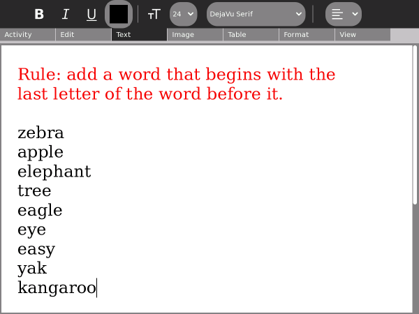

Group Storytelling
The Dadaists, a cultural movement that began in Europe towards the end of World War I (1916) invented a number of art-construction techniques, including collage and photo montage. Many of their works were collaborative, including exquisite corpse, a method by which a collection of words or images was collectively assembled. Each collaborator adds to a composition in turn, either by following a rule or by being allowed to see the end of what the previous person contributed.
A shared instance of Write can be used in a similar way to create a collaborative story, poem, rhyme, or group stream of consciousness.
Using Write for group storytelling
It is fun and easy to use Write for group storytelling. Simply share a document with a group of friends (or your class); take turns opening the document and adding to the story.
Steps:
- Open a document in Write.
- Type in a rule on the first line for everyone to follow. (Some examples are listed below.)
- Go to the Activity tab.
- Select "Share with Neighborhood".
- One at a time, each person in the group should open the shared document by clicking it in the Neighborhood View.
- During their turn, they should follow the rule to add to the end of the story.
- They should exit Write after they have added to the story. (Important: the person who originally shared the document should not exit Write until everyone has taken their turn.)
- After each person has added to the story, the person who started the story should read it aloud to the group.
Examples
- Add a sentence that continues the theme of a story.
- Add a new sentence that starts with the last word of the sentence that comes before it.
- Add a new word that begins with the same letter as the last letter of the word before it.
- Add an adjective after a noun, a noun after an adjective.
- Add a word with one more letter than the word before it (this gets hard for a large group!)
- Add words in alphabetical order.

Author : GroupStoryTelling
© Walter Bender 2008
Modifications:
adam hyde 2008
Anne Gentle 2008
Tom Boyle 2008
License : General Public License
Produced in FLOSS Manuals (http://www.flossmanuals.net)